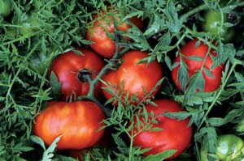

Abundant Life Seed Foundation was one of the pioneering groups that helped spark modern gardeners’ interest in growing heirloom varieties. Founded in 1975, the group began the important work of collecting, preserving and selling seeds of distinctive open-pollinated vegetables, herbs and flowers. But on Aug. 4, 2003, a fire consumed the Abundant Life offices in Port Townsend, Wash., destroying numerous records and all but a few seeds stored in a refrigerator.
Many long-time supporters sent in their own seeds of rare varieties, such as ‘Silvery Fir Tree’ tomato (see photo) and ‘Healthy’ pepper, while Abundant Life’s leaders evaluated what to do with the business. Director Matthew Dillon wanted to move beyond seed preservation to address hands-on matters related to seed stewardship. He opted to concentrate on increasing seed diversity by building regional systems controlled by farmers and gardeners through the Organic Seed Alliance (www.seedalliance.org).
Meanwhile, Tom and Julie Johns, owners of Territorial Seed Co. in neighboring Washington, “didn’t want to see all the good work done by so many people over such a long period of time just fall away,” Tom says. In 2004 they acted on their concerns by adopting Abundant Life as Territorial’s sister company, and immediately began increasing stock of rare varieties at their certified organic farm in London, Ore. Reborn under the name Abundant Life Seeds (www.abundantlifeseeds.com), the company offered seeds of 240 varieties in 2005. For 2007, that number has increased to 306 varieties, including meaty ‘Miles’ garbanzo beans and the rare ‘Tocan’ tomato, a Peruvian grape tomato that bears trusses of flattened, slightly pleated red fruits.
The Territorial Seed catalog does not have room for hundreds of new additions, so the Johns operate Abundant Life as a specialty company and use several certified organic acres at Territorial’s research farm to grow seed. “A lot of good varieties have a tough time making it into the Territorial catalog,” Tom says. “You can only offer so many varieties of cabbage and corn and still stay in business. This way, we can concentrate on top-performing, open-pollinated varieties.”
In addition to organically grown seeds, Abundant Life’s new catalog includes row covers, reflective mulches and a dozen products approved for use by the Organic Materials Review Institute. You can request a catalog through the Web site, or by calling (541) 767-9606.
|
 DAVID CAVAGNARO The ‘Silvery Fir Tree’ tomato has unique fernlike ornamental foliage. |
|
|